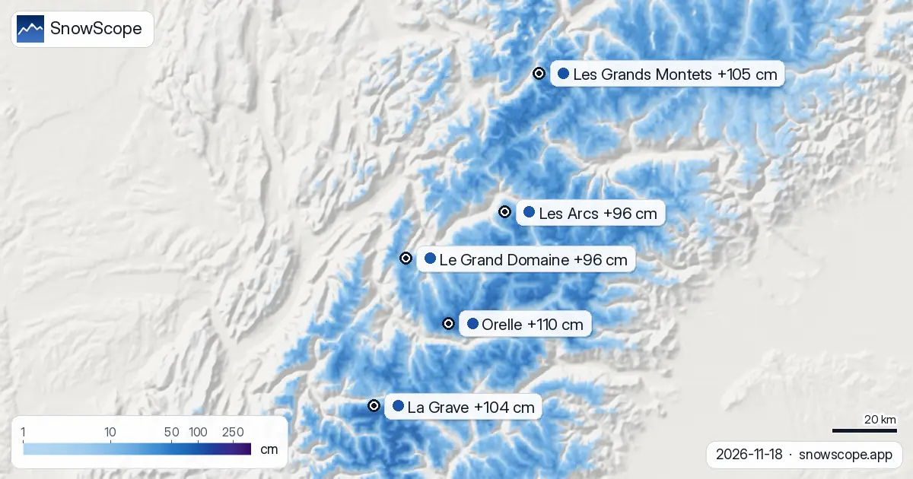

Prévisions neige à 72 heures comparées, de l'Europe à l'Amérique du Nord : Orelle en tête (18 novembre)
Orelle, dans les Alpes françaises, connaîtra les plus fortes chutes de neige au cours des trois prochains jours : 110 cm d'ici le 21 novembre, avec 50 cm tombant dans les 24 premières heures. Le classement en Europe, à l'ouest des États-Unis et dans l'ouest du Canada montre une division nette : les Alpes s'attendent à des chutes abondantes, tandis que le Canada restera sec.
Consultez les prévisions neige en temps réel pour Orelle sur l'application SnowScopeHauteurs de neige, alertes poudreuse et carte 3D, gratuitement.La tempête alpine
Orelle arrive en tête des prévisions avec 110 cm sur trois jours, suivie de près par Les Grands Montets et La Grave, qui s'attendent toutes les deux à environ 105 cm. Les trois connaîtront des chutes de neige commençant en altitude : le niveau de congélation reste au-dessus de 2 500 m à Orelle et La Grave, au-dessus de 1 800 m aux Grands Montets. Cela signifie de la poudreuse sur les pentes supérieures ; le terrain inférieur deviendra humide.
Le Grand Domaine, Les Arcs et Courmayeur prévoient chacun 96 cm en trois jours. Le schéma se maintient dans toute la chaîne : chutes abondantes, ligne de neige variant de 300 à 400 mètres entre les stations selon l'exposition et l'altitude. Glacier 3000 en Suisse et La Martinaux connaîtront également une accumulation importante, bien que légèrement moins qu'aux sommets français.
| # | Station | Région | +24 h | +72 h | Limite pluie-neige |
|---|---|---|---|---|---|
| 1 | Orelle | Alpes · France | 50 cm | 110 cm | 2 500 m |
| 2 | Les Grands Montets | Alpes · France | 42 cm | 105 cm | 1 800 m |
| 3 | La Grave | Alpes · France | 51 cm | 104 cm | 2 900 m |
| 4 | Le Grand Domaine | Alpes · France | 44 cm | 96 cm | 1 500 m |
| 5 | Les Arcs | Alpes · France | 41 cm | 96 cm | 1 900 m |
| 6 | Courmayeur | Alpes · Italie | 40 cm | 96 cm | 1 900 m |
| 7 | Glacier 3000 | Alpes · Suisse | 36 cm | 96 cm | 2 200 m |
| 8 | La Martinaux | Alpes · Suisse | 30 cm | 94 cm | 1 600 m |
| # | Station | Région | +24 h | +72 h | Limite pluie-neige |
|---|---|---|---|---|---|
| 1 | China Peak | Ouest américain · États-Unis | 27 in (69 cm) | 33 in (83 cm) | 5 600 ft (1 700 m) |
| 2 | Mammoth Mountain | Ouest américain · États-Unis | 26 in (67 cm) | 30 in (77 cm) | 5 900 ft (1 800 m) |
| 3 | June Mountain | Ouest américain · États-Unis | 24 in (60 cm) | 28 in (70 cm) | 5 900 ft (1 800 m) |
| 4 | Kirkwood | Ouest américain · États-Unis | 21 in (53 cm) | 26 in (66 cm) | 5 600 ft (1 700 m) |
| 5 | Bear Valley | Ouest américain · États-Unis | 20 in (50 cm) | 25 in (64 cm) | 5 200 ft (1 600 m) |
| 6 | Kingvale | Ouest américain · États-Unis | 19 in (49 cm) | 25 in (64 cm) | – |
| 7 | Dodge Ridge | Ouest américain · États-Unis | 19 in (47 cm) | 25 in (64 cm) | 4 900 ft (1 500 m) |
| 8 | Badger Pass | Ouest américain · États-Unis | 18 in (45 cm) | 24 in (61 cm) | 5 200 ft (1 600 m) |
| # | Station | Région | +24 h | +72 h | Limite pluie-neige |
|---|---|---|---|---|---|
| 1 | Castle | Ouest canadien · Canada | 1 cm | 4 cm | 1 000 m |
| 2 | Pass Powderkeg ski | Ouest canadien · Canada | 1 cm | 3 cm | 900 m |

Comment Orelle se compare à la normale
Orelle suit une tendance légèrement inférieure à sa profondeur typique de mi-novembre. Le site affiche 54 cm aujourd'hui ; une mi-novembre normale là-bas tient 58 cm. Cependant, la neige entrante changera cet équilibre. Il y a une semaine, le même endroit mesurait seulement 12 cm, donc la tempête va à peu près tripler la base en trois jours.
Les hivers passés montrent que la neige en cette abondance à cette altitude en mi-novembre n'est pas routinière. Un hiver sur dix seulement a connu 105 cm ou plus à cette date à l'altitude d'Orelle. La meilleure saison de neige à Orelle arrive généralement plusieurs semaines plus tard, début ou mi-mars.

La Californie génère son propre temps
China Peak mène l'ouest américain avec 69 cm prévus pour les 24 prochaines heures et 83 cm au total d'ici le 21 novembre. Mammoth Mountain suit : 67 cm demain, 77 cm au total. Les deux se situent dans une trajectoire de tempête distincte du système alpin. La ligne de neige là-bas varie de 1 700 à 1 800 m—plus basse qu'en Europe—ce qui signifie que la neige mouillée atteindra partiellement chaque montagne.
June Mountain, Kirkwood et Bear Valley s'attendent chacun à 60 à 50 cm en 24 heures, avec des totaux entre 64 et 70 cm d'ici vendredi. Ces stations se situent au sud des chutes les plus abondantes mais reçoivent toujours des précipitations organisées. Le schéma est plus étroit en portée géographique et plus court en durée que ce que les Alpes connaîtront.
L'ouest du Canada reste en dehors de la tempête
Castle et Pass Powderkeg ski recevront très peu de neige : 1 cm et 3 cm respectivement sur trois jours. La ligne de neige reste très basse, près de 900 à 1 000 m, donc même cette petite quantité sera partiellement mouillée. Les systèmes tempétueux affectant l'Europe et la Sierra américaine sont trop loin au sud et à l'est pour atteindre les Rocheuses canadiennes cette semaine.
Ce que les chiffres signifient
Ce sont des estimations pour les pentes supérieures de chaque station, valides jusqu'au 21 novembre. Les prévisions plusieurs jours à l'avance peuvent changer : consultez à nouveau la carte 24 heures avant de voyager. La ligne de neige marque le niveau de congélation prévu moins environ 300 m ; au-dessus, la neige reste légère et sèche ; au-dessous, la pluie ou la neige mouillée s'entremêlent.
La poudreuse fraîche fond ou durcit rapidement, surtout en mi-novembre quand les jours sont encore longs. Les meilleures conditions arriveront le matin après l'arrêt de la neige, avant que le soleil et les foules ne gagnent les pentes. Planifiez votre timing en conséquence.
Conseils aux skieurs
- Allez aux remontées les plus hautes. À Orelle et La Grave, la ligne de neige reste au-dessus de 2 500 m, visez donc les altitudes bien au-dessus pour rester en poudreuse.
- Le timing est plus important que la profondeur. La neige fraîche se transforme en croûte ou en slush vers midi, ski donc en premier. Les 24 prochaines heures à Orelle sont critiques : 50 cm tombront pendant cette période.
- Si vous êtes à l'ouest des États-Unis, la ligne de neige est plus basse (autour de 1 700 m) ; la neige mouillée sera mélangée plus bas. Les pentes supérieures à Mammoth et China Peak seront meilleures.
- Avant de partir hors-piste ou en ski de randonnée, consultez le bulletin d'avalanche officiel de votre région.
- Les sites des stations confirment les remontées et les dates d'ouverture. La neige sur la carte des prévisions ne garantit pas qu'une station fonctionne.
- Définissez une alerte poudreuse dans l'appli SnowScope pour recevoir une notification quand la neige fraîche arrive à votre station choisie.
À propos de ces chiffres
Les hauteurs de neige des stations sont la neige la plus épaisse sur le haut du domaine à la date indiquée ; ce sont des estimations pour une zone, pas une mesure en un point. Les prévisions peuvent changer. Consultez toujours le bulletin d'avalanche officiel avant le hors-piste.
Bulletins d'avalanche officiels: EAWS (Europe) · avalanche.org (US) · Avalanche Canada
Citer ce bulletin
Pour la recherche, l'enseignement ou la presse : chiffres et graphiques réutilisables librement sous CC BY 4.0 avec cette citation.
SnowScope (2026), Prévisions neige à 72 heures comparées, de l'Europe à l'Amérique du Nord : Orelle en tête (18 novembre), https://snowscope.app/blog/fr/2026/11/where-most-snow-falls-next-72-hours-18-november-2026.html, consulté le 2026-11-18
SnowScope (Atlas Labs). (2026, November 18). Prévisions neige à 72 heures comparées, de l'Europe à l'Amérique du Nord : Orelle en tête (18 novembre). SnowScope snow reports. https://snowscope.app/blog/fr/2026/11/where-most-snow-falls-next-72-hours-18-november-2026.html
BibTeX
@misc{snowscope2026wheremostsnowfallsnext72,
author = {{SnowScope (Atlas Labs)}},
title = {Prévisions neige à 72 heures comparées, de l'Europe à l'Amérique du Nord : Orelle en tête (18 novembre)},
year = {2026},
month = nov,
howpublished = {\url{https://snowscope.app/blog/fr/2026/11/where-most-snow-falls-next-72-hours-18-november-2026.html}},
note = {Published 2026-11-18 10:29 UTC; accessed 2026-11-18}
}· CC BY 4.0 · Méthodes, données et outils →
Orelle : neige et température selon l'altitude, cet hiver vs l'hiver dernier (outils) →
Suivre Orelle
Gratuit : un message quand la neige arrive, et la météo chaque matin.